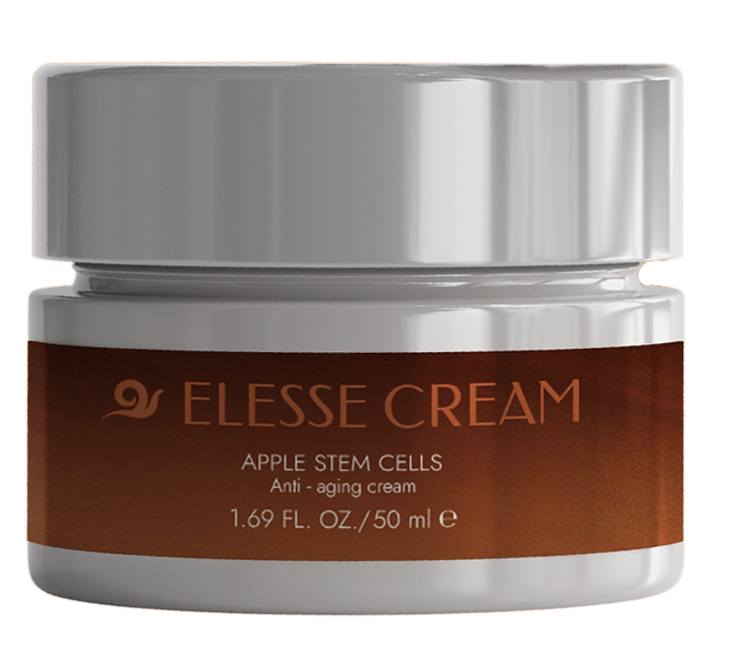

Wcześniej miałam mnóstwo kompleksów. A teraz? Czuję się młodsza o 15 lat i mam dużo energii, aby róbić różne, ciekawe rzeczy! Często wychodzę i poznaję nowe osoby. Moje życie w końcu nabrało kolorów.
Katarzyna
Vigevano
Jest WYJĄTKOWY. W końcu mam gładką skórę i nie muszę nakładać mnóstwa podkładu, żeby wyglądać dobrze. Czuję, że mam więcej energii i optymizmu. Polecam!
Monika
Verona
Pomarszczona szyja, bruzdy na czole oraz wyschnięta szara cera odebrały mi radość życia...Ale to już przeszłość. Dzięki wyglądam młodziej, jakbym znów miałą 30 lat.
Martyna
Afragola
Ten zabieg uratował mnie od kompleksów. Nie zamierzam już wstrzykiwać botoksu, ponieważ nie mam już w ogóle zmarszczek. Co za ulga!
Anna
Milan
Czy wiesz, co lubię w nim najbardziej? Fakt, że naprawdę działa i jest w 100% naturalny. Nie powoduje żadnych skutków ubocznych i jest całkowicie bezpieczny. Nie ma na świecie lepszej
metody na odmłodzenie skóry.
Ilaria
Olbia
Mój sąsiad miał rację! Ta formuła dosłownie odwraca bieg czasu! Nigdy więcej zmarszczek i wstydu.
Graziella
Prato
28 nap alatt eltünteti a ráncok 98%-át és legalább 15 évvel fiatalítja az arcot és a nyakat - megerősítve független klinikai vizsgálatokkal .
Üdvözletem!
A nevem Vince Tamás professzor, a sejtbiokémiára szakosodott tudós vagyok. Ezen az oldalon szeretném bemutatni életem fő eseményét, az általam feltalált terméket az év bőrgyógyászati felfedezése címre jelölték.Kifejlesztettem
egy módszert, amellyel bárki természetes módon eltüntetheti a ráncok 98%-át, eltüntetheti az öregedés jeleit az arcon, nyakon és dekoltázson és 28 nap alatt legalább 15 évvel megfiatalítsa a bőrét.
Ezért ha drága és az egészségre veszélyes injekciók és műtétek NÉLKÜL szeretne:
Az arc, a nyak és a dekoltázs legmélyebb ráncainak akár 98%-át is eltünteti - a botox-al való feltöltéshez hasonló hatás elérése;
az arc és a nyak bőrének feszesítése - mint egy műtéti lifting után.
hidratálja, regenerálja és intenzíven táplálja még a legszürkébb, kiszáradt, fáradt és sérült bőrt is ;
kiegyenlíti az arcszínt - eltünteti az elszíneződéseket, a látható hajszálereket és minden tökéletlenséget;
az arc és a nyak bőrének fiatalítása legalább 15 évvel 28 nap alatt tartós hatás,
Tudja, hogy mindez drága és veszélyes eljárások nélkül is elérhető, így elkerülheti a mesterséges maszk hatását és több ezer forintot takaríthat meg. Ha tetszik, feltétlenül olvassa el, amit el szeretnék mondani Önnek.
Nem számít, hogy Ön egy 30 éves lány az első ráncokkal, vagy akár egy 80 éves nagymama, aki már teljesen feladta a reményt, hogy visszafordíthatja az öregedés jeleit. A tudomány bebizonyította, hogy 28 nap alatt akár 15 évet
fiatalodhat 100%-ban természetes módon!
Ezért az én módszerem nagyszerű alternatívája az arcfelvarrásnak és a botoxnak:
elkerülni a fájdalmat - nem kell műtőasztalra küdnie, nem kell szikének vagy tűknek kitennie magát;
elkerülni a súlyos szövődményeket, mint például az izombénulás, szövetelhalás és idegrendszeri rendellenességek;
fiatalítás harmóniában a természettel - az arany mikroszemcsék és a Renovage komplexum hatásának köszönhetően visszanyeri 15 évvel ezelőtti (vagy még korábbi!) arcának kinézetét, ahelyett, hogy egy mesterséges műanyag
maszk látszatát keltené.
Eurók ezreit spórolja meg, ahelyett, hogy veszélyes műtétekre költené.
Kifejlesztettem egy természetes gyógykészitményt, amely visszafordítja a bőr biológiai korát
Ezzel a temékkel elfelejti a gátlások okozta kétségbeesést.Abbahadja alapozóval és pirosítóval elfedni az arcát vagy eltakarni a hajávalal.Egy gramm sminkre sem lesz szüksége, mert a bőre tökéletesen sima, szép, feszes és egyenletes
színű lesz. Önbizalmat szerez, elkezdi vonzani a férfiak tekintetét és élvezni fogja a bókokat .Mindez annak köszönhető, hogy kifejlesztettem egy makromolekuláris fiatalító formulát arany mikroszemcsékkel, amely
helyreállítja a bőr magas kollagénszintjét és visszafordítja a bőrsejtek biológiai korát. Még a legmélyebb ráncokat is eltünteti, és a legmegereszkedettebb bőrt is feszesíti, 28 nap alatt legalább 15 évvel fiatalítja meg
arcát, nyakát és dekoltázsát. Hogyan csináltam?
Meg akartam szabadítani a feleségemet a ráncok okozta gátlásoktól.
Egy friss tanulmány szerint Európában a nők 68% -a naponta szembesül a bőröregedés okozta gátlásokkal. Bár abszurdnak tűnhet, az Európai Szociális Egészségügyi Szervezet szerint az öregedés jelei a nőknél a válások 43%-ának
okai! A ráncok megfosztják a nőket a szépségüktől, magabiztosságuktól és vonzerejüktől. Féltékenyek lesznek a férjükre, haragszanak és boldogtalanok. A veszekedések általánossá válnak, kezdődnek a válások... és ennek
a gyerekek fizetik az árát! Sajnos a ráncok okozta gátlások a feleségemet is kezdték zavarni. Eleinte elkezdett többet sminkelni magát, aztán egyre rosszabb lett.
Bevallotta nekem, hogy"nem tud ránézni arra a ráncos szörnyetegre a tükörben". Nem vagyok különösebben érzékeny, de egy dolgot be kell vallanom: vérzik a szívem, amikor az általam imádott nő ilyeneket mond magáról...
A feleségemnek van egy ikertestvére, akivel egyszer elment vásárolni. Hisztérikusan, keservesen sírva jött haza. Azt kiabálta nekem, hogy az eladó a nővére anyjának tartotta. Szörnyű megaláztatás volt ez számára. Ez után három
napig nem hagyta el a házat...
Nem hagytam, hogy a feleségem szike alá kerüljön.
Végül a feleségem azzal az ötlettel állt elő, hogy csináltassunk neki egy arcplasztikát. Amikor ezt meghallottam, majdnem leestem a székről. Vajon átgondolta az egészet? Az arc több mint egy hónapig gyógyul a beavatkozás után.
Pokolian fáj, megduzzad és zúzódások keletkeznek. De ez még semmi. Ezeknek az eljárásoknak majdnem a fele maradandó izombénulással végződik amitől az arc műanyag maszknak tűnik.És kit érdekel, hogy fellvannak varrva aráncok
vagy nem , ha azt sem tudod, mikor mosolyog egy nő, amikor az arca meg sem mozdul? Nem hagyhattam, hogy a feleségem ilyen ostobaságot tegyen. Úgy döntöttem, hogy nekem kell tennem valamit, hogy megoldjam ezt a problémát.
Hogyan találtam ki a "ráncok és megereszkedett bőr ellenszerét"?
Segítenem kellett a feleségemnek megszabadulni a ráncaitól és visszanyerni a fiatalságát. Azt akartam, hogy olyan legyen, amilyen régen volt: boldog és élettel teli, de most szomorú és frusztrált volt a gátlasai miatt... Aztán
azt mondtam magamban: "Vince, te tudós vagy! És számos olyan gyógyszer felfedezésében vettél részt, amelyek hatékonyan küzdenek a különböző betegségek ellen. Hozz létre egy természetes fiatalító terméket, amely MŰKÖDIK!".
Így hát elkezdtem a kutatásomat....
Az elmúlt hat hónapban intenzív laboratóriumi kutatást végeztem. A természethez való hűség, a tudományos ismeretek, a türelem és egy kis szerencse gyorsan meghozta a kívánt eredményt.Kidolgoztam egy egyedülálló makromolekuláris
fiatalító formulát, amely arany mikrorészecskéket tartalmaz. Az áttörés abban rejlik, hogy belülről integrálja a bőr kollagénszintjét, ezáltal visszafordítja a bőr biológiai öregedését. Ez az első és az egyetlen ilyen jellegű
formula a világon. Azonnal elküldtem nagyszabású tesztelésre. 98%-os hatékonyságát a legnagyobb európai és amerikai kutatóközpontok is megerősítették! Már a tesztelési fázisban a fiatalító formulám természetes módon visszaadta
több ezer tesztalany arcának és nyakának a fiatalságát!
A feleségem mindössze egy hét alatt megszabadult a szarkalábaktól, az ajakráncoktól és a börhibáktól. Boldog volt, hogy már nem kell napi több órát töltenie a sminkeléssel. Teljesen abbahagyta a festést! És ez még csak
a kezdet volt. A következő egy hét alatt a mély barázdák, az orr- és homlokráncok szó szerint eltűntek az arcáról. Bőre napról napra feszesebb és kisimultabb lett, míg végül az arca és a nyaka visszanyerte fiatalos megjelenését.
Alig 3 hét elteltével izgatottan mondta nekem: "Jan, tényleg fiatalabbnak nézek ki! Te feltaláltad a ráncok és a megereszkedett bőr ellenszerét! Hány nőt fogsz boldoggá tenni a világon! Nem tudom, hogyan köszönjem
meg neked...".
Nézzék csak meg: hát kinéz a feleségem 62 évesnek?
Visszaadtam a feleségemnek a fiatalságot, az energiát és az életerőt.
Eddig lehetetlen volt a ráncok hatékony eltávolítása tűk és szikék nélkül. Ma a kezelésemnek köszönhetően nemcsak megállítható a bőr öregedése, hanem teljesen visszafordíthato !
A feladatom az volt, hogy olyan formulát hozzak létre, amely radikális hatást fejt ki, de 100%-ban természetes és biztonságos. Hatékonyan feltölti a ráncokat és erősíti a megereszkedett bőrt. Megcsináltam! Arany mikrorészecskéket
és Renovage Complexet tartalmazó regeneráló formulát fejlesztettem ki, amely lehetővé teszi a bőr számára, hogy visszatérjen ahhoz a sűrűségéhez és rugalmasságához, amely 20-25 éves korában volt, eltünteti a ráncok 98%-át,
és kevesebb mint 28 nap alatt legalább 15 évet fiatalít. Egy krémbe tettem és neveztem el.
Miért nevezik a krémemet "csodaszernek a ráncok és a megereszkedett bőr ellen"?
98% HATÉKONYSÁG
ELŐTTE
UTÁNNA
Az öregedési folyamatokra hajlamos sejtek - ráncos és megereszkedett bőr
Megfiatalított sejtek - megújult, sima és feszes bőr
Eddig ez csodának tűnt. Ezt a tényt azonban megerősíti a feleségem és az a 14 000 nő esete, akik a módszeremnek köszönhetően már visszanyerték fiatalságukat. Sőt, kezelés hatékonyságát minden kétséget kizáróan bebizonyította egy francia kutatóközpont Lyonban. Ez egy olyan világfelfedezés, amely elnyerte a kozmetológia, a bőrgyógyászat és az esztétikai orvoslás kiemelkedő szakembereinek elismerését és csodálatát.
100%-BAN BIZTONSÁGOS ÉS NAGYON KÖNNYEN HASZNÁLHATÓ
A kizárólag természetes, biztonságos és szuperhatékony fiatalító összetevőket tartalmaz. A krémhez 24 karátos arany mikrorészecskéket adtam, amely maximálisan aktív anyag, mégis biztonságosan használható.
A ban lévő arany 93%-kal növeli a kollagénszintézist, ezáltal intenzíven revitalizálja a bőrt és ragyogóvá teszi az arcbőrt már az első alkalmazás után. A szabad gyökök 78%-át eltávolítja
mindössze 7 napos használat során. Mindezeknek köszönhetően a bőr fiatalabbnak tűnik, és a ráncok belülről feltöltődnek a legkisebb természetellenes beavatkozás - mint a szike vagy a tű - nélkül. Ez a legtermészetesebb "Botox-hatás",
amiről valaha is álmodni lehetett.
A formula másik rendkívül aktív összetevője a Renovage Complex. Ez egy exkluzív összetevő, amely méregteleníti a bőrt és garantálja annak természetes frissességét, megvédve
azt az öregedési hajlamtól. A Complex Renovage többek között kapril-trigliceridet tartalmaz, amely erős vízmegkötő képességgel rendelkezik a bőrben, valamint teprenont, amely csökkenti a pigmentációt és kiegyenlíti
a bőr tónusát. Ennek eredményeként a bőr visszanyeri fiatalos és friss megjelenését.
A natúr szkvalánt is tartalmaz aktív formában. Amely felelős a bőr feszességéért és sűrűségéért, de sajnos a bőrben lévő mennyisége idővel csökken. Ezért a bőrben lévő szkvalán
szint feltöltése biztosítja, hogy a bőr ismét olyan feszes legyen, mint 15 évvel ezelőtt.
A formulája édes mandulaolajjal is gazdagított, amely egy igazi vitaminbomba, erős öregedésgátló tulajdonságokkal. 89%-kal javítja a vérkeringést és 85%-kal a bőr hidratáltságát.
Ez azt jelenti, hogy már az első alkalmazás után érezni fogja, milyen puha, sima és kellemesen hidratált a bőre.
Napjainkban egyetlen más krém sem rendelkezik ilyen gazdag és hatékony fiatalító formulával. Kutatásaim és több ezer elégedett felhasználó véleménye ezt megerősíti. És mindenekelőtt - ami a legjobban érdekelt, az a feleségem
öröme és elégedettsége volt, hogy a használata után visszanyerte fiatalos, feszes bőrét. Az önbizalmát és a vidámságát is.
Minden barátja, rokona és ismerőse csodálkozni fog a metamorfózisán. Kevesebb, mint 28 nap múlva olyan bókokat élvezhet, mint például "milyen fiatal és szép vagy!"

28 NAP ALATT 15 ÉVVEL FIATALODOTT MEG A BŐR
100% TERMÉSZETES ÉS BIZTONSÁGOS KEZELÉS
A RÁNCOK 98%-ÁT FELTÖLTI, ÚGY HAT, MINT A BOTOX
EGYSZERŰ A HASZNÁLATA
LIFTING-MEGERŐSÍTÉS
TÖBB EZER FORINT MEGTAKARÍTÁS
Hogyan hagyhatná ki a lehetőséget, hogy visszanyerje a bőre fiatalságát?
Továbbra is szenvedhet a gátlásoktól, amelyeket a ráncok, az arc és a nyak megereszkedett bőre okoz. Vagy továbbra is szedheti az állítólagos "ránctalanító" kapszulákat, amelyek nem működnek, mert nem hidratálják és nem is
simítják ki a bőrt és ezért nem simitják ki a ráncokat sem. Végezetül, akár elgondolkodhat egy arcplasztikán vagy botoxon - ezzel egy mesterséges külsőt kölcsönözve magának és egy csomó pénzt kidobva gúnyt űz magából...
De miért is, amikor én garantálom, hogy természetes, gyors, egyszerű és megfizethető módon tarthatja fiatalosnak az arcát és a nyakat? Mindössze 28 nap kézelés alatt csatlakozhat ahhoz a 14 000 elégedett felhasználóhoz, akik már megszabadultak a ráncoktól és 28 nap alatt legalább 15 évet fiatalodtak.
Ön nem kockáztat semmit!
A használatával 28 nap alatt eltünteti az öregedés jeleit, és legalább 15 évvel megfiatalítja az arcát, nyakát és dekoltázsát. Ráadásul semmit sem kockáztat! Világsikert aratva a formulám
elnyerte a tekintélyes tripla elégedettségi garanciát: eredetiség, minőség és elismerés.
Tripla elégedettségi garancia
1. Garantált eredetiség - A innovatív fiatalító formulát tartalmaz, amely arany mikrorészecskéket, Renovage komplexet és szkvalánt tartalmaz, ami visszafordítja a bőrsejtek
biológiai öregedését. A ráncok eltüntetésében és az arc- és nyakbőr feszesítésében való hatékonyságát klinikai vizsgálatok igazolták. Ez az első és egyetlen innovatív formula a maga nemében. Így biztos lehet benne, hogy
az eredeti kezelést csak ezen a weboldalon keresztül kapja meg.
2. Minőségbiztosítás - A makromolekuláris fiatalító formula fejlett gyártási folyamatának köszönhetően a megfelel a legmagasabb minőségi követelményeknek. A kezelés minden összetevője
szigorú tesztelésen esett át. A laboratóriumi vizsgálatok megerősítették, hogy a kezelésnek nincsenek mellékhatásai és minden bőrtípus esetében biztonságos, beleértve az aknét, az atópiát vagy az allergiát is. És mindezt
annak érdekében, hogy a hatása 100%-ban megfeleljen az Ön elvárásainak.
3. Elismerés garancia - Számos laboratóriumi és klinikai vizsgálat igazolja a maximális hatékonyságát. Ezen eredmények alapján a terméket világszerte elismerték a vezető kozmetikusok,
akik ajánlják ügyfeleiknek. Meggyőződésük, hogy 28 nap alatt megszabadulhat az öregedés jeleitől és ezáltal 15 évet fiatalodhat.
Fiatalodjon meg legalább 15 évvel 28 nap alatt gyorsan, egyszerűen és gazdaságosan a segítségével.
Az Egyesült Államok és Japán nagy kozmetikai vállalatai, amelyek már látták a kezelés eredményeit, szó szerint versenyeznek a bőr biológiai korát megváltoztató innovatív formulám szabadalmáért. Amint továbbértékesítem a szabadalmat,
a kezelés világszerte elérhető lesz, de természetesen nagyon drága lesz...
Amíg ez nem történt meg, úgy döntöttem, hogy egy kedvezményes klubtagsági formulát teszek elérhetővé Magyarországon egy 50%-os promócióval. Mindezt azért, hogy minél több nőnek segítsek megszabadulni a ráncoktól.
Csak töltse ki az adatlapot 2 perc alatt, és néhány napon belül megkapja a csomagját, kényelmesen kifizetve az árát a futárnak vagy a postásnak .
Köszönöm, hogy időt szánt az üzenetem elolvasására. Nagy boldogságot kívánok új életéhez, amelyben elfelejti a ráncok okozta gátlásokat és mosolyogva nézi magát a tükörben.
Vince Tamás professzor
Úgy nézek ki, mint a lányom.
Képzeléjk el, nem volt műtéti arcplasztikám! Még ha nagyítóval néznék is, nem látnának szikehegeket. Mert 2 hónap telt el a
segítségével és úgy nézek ki, mint a lányom! Bár azt mondják, hogy csak a gazdagok lehetnek örökké fiatalok....
Román Mária
72 éves,Kaposvár
Egyszerű és hatékony
Nehéz elhinni, hogy egy ilyen egyszerű módszer képes ilyen csodákra. Egyszerűen vigye fel a krémet az arcára, majd figyelje, ahogy eltűnnek a ráncok. Csodálatos. Én, nővéreim és unokatestvéreim
már használtuk. Szívből ajánlom!
Sturla Anna
55 éves, Röszke
Új életet kezdtem
A kezelés kevesebb mint 3 hét alatt helyreállította a bőröm fiatalságát. Először, amikor az ujjaimmal megérintettem az arcom, nem hittem el, hogy ez az én arcom! Szóvalpuha és bársonyos.... Úgy érzem, mintha
egy új, gátlásoknélküli életet kezdtem volna. Köszönöm.
P. Andrea
69 éves
Újra magabiztos vagyok
A válás után azt hittem, hogy egy olyan öregasszony, mint én, soha többé nem találkozik férfival. Hogy őszinte legyek, egy lépésre voltam a kétségbeeséstől. Amíg nem alkalmaztam ezt a terméket. Tizenöt évvel fiatalabb lettem,
visszanyertem az önbizalmamat és elkezdtem randizni. Hamarosan meg is találtam a páromat! 7 évvel fiatalabb, de ez nem akadályoz meg minket - ő tűnik idősebbnek !
Zorka Valéria
67, Hévíz
Legyőztem a legnagyobb gátlásomat
A szem körüli ráncok voltak a legrosszabb rémálmom! A bőröm megereszkedett és semmilyen krém nem segített. Én egyébként féltem a botox-tól, manapság sokat beszélnek arról, hogy mennyire veszélyes...Egyszer ezt a csodát
kaptam ajándékba az unokabátyámtól. A szuper formulának köszönhetően a ráncaim kevesebb mint egy hónap alatt kisimultak. Ma ragyog az arcom és a fiatal srácok megfordulnak, hogy megnézzenek. Minden barátnőm használja
már ezt a terméket és mindannyian megdöbbentek a hatásától. Valami rendkívüli!
Veres Nati
57 éves, Kecskemét
Megkérnek, hogy mutassam meg a személyi igazolványomat!
Bár még csak 36 éves vagyok, alig egy hónapja kilométeres távolságból látszottak a ráncaim ... És ma? A boltban azt kérik, hogy mutassam meg a szemály igazolványt, amikor bort szeretnék vásárolni vacsorára. El tudják képzelni,
mennyire hízelgő ez számomra?
Kovács Liza
36 éves,Csongrád
WOW!
Sok "csodaszer" kozmetikumot kipróbáltam már, amelyek egyáltalán nem működtek, ezért amikor megkaptam ezt a krémet ajándékba, nagy lelkesedés nélkül kezdtem el használni. Látniuk kellett volna az arcomat, amikor a kezelés
első hete után a tükörbe néztem. Hű-ha! A bőröm annyira táplált, puha és sima lett. Úgy néztem ki, mint egy tinédzser!
Szabó Piroska
30 éves, Gyula
Az egyetlen hatékony módszer
Több módszert is kipróbáltam a bőröm minőségének javítására. Semmi sem működött, csak elszívták az energiámat, a reményemet és a nehezen megkeresett pénzt. Ezúttal pont az ellenkezője történt. A legelső naptól kezdve éreztem a különbséget ,
és egy hónap múlva minden ráncom eltűnt. A férjem újra belémszeretett!